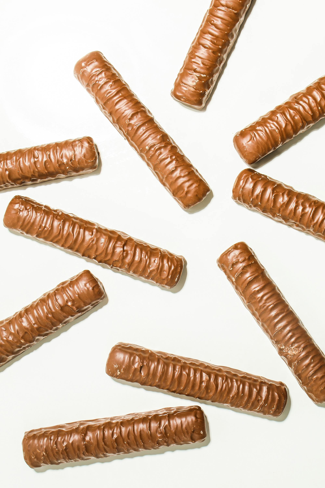
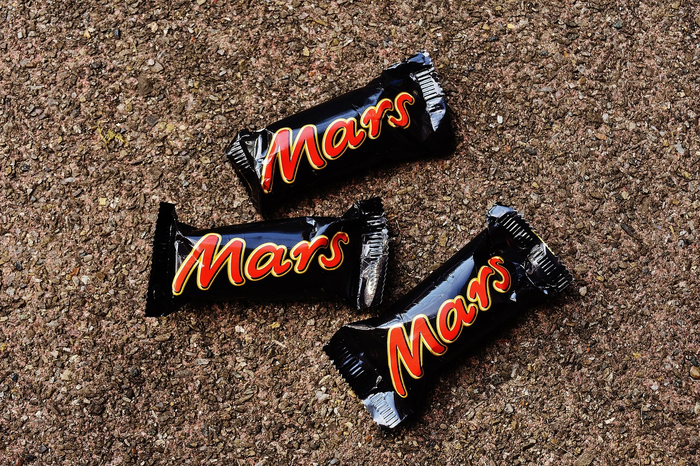
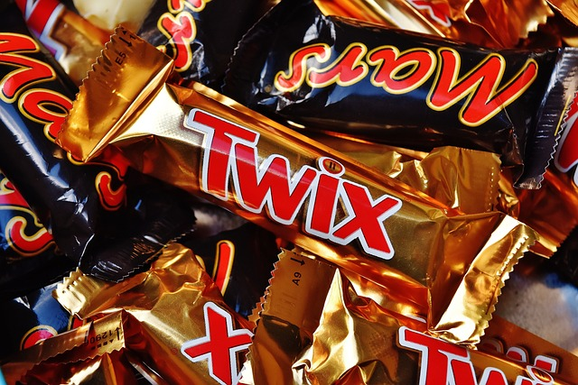
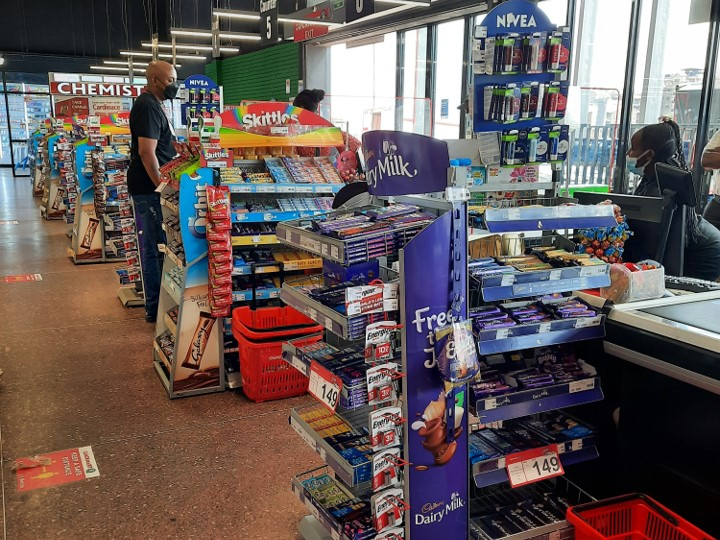

What is a countline?
The term "Countline" refers to a specific category of chocolates that are typically sold as individual bars or pieces. These products are designed for quick, on-the-go consumption and are often found in convenience stores, supermarkets, and vending machines.
Characteristics of Countlines
-
Individual Packaging
Countline products are usually sold in single-serving sizes, making them convenient for consumers to purchase and consume immediately.
 -
Variety
This category encompasses a wide range of products across multiple brands. It is highly competitive.
 -
Impulse Purchase
Countline items are often placed near checkout counters or in prominent locations in stores to encourage impulse buying.

Popular Brands
- Cadbury 5 Star
- Snickers
- Mars Bar
- Kit Kat
- Galaxy Bar
- Twix